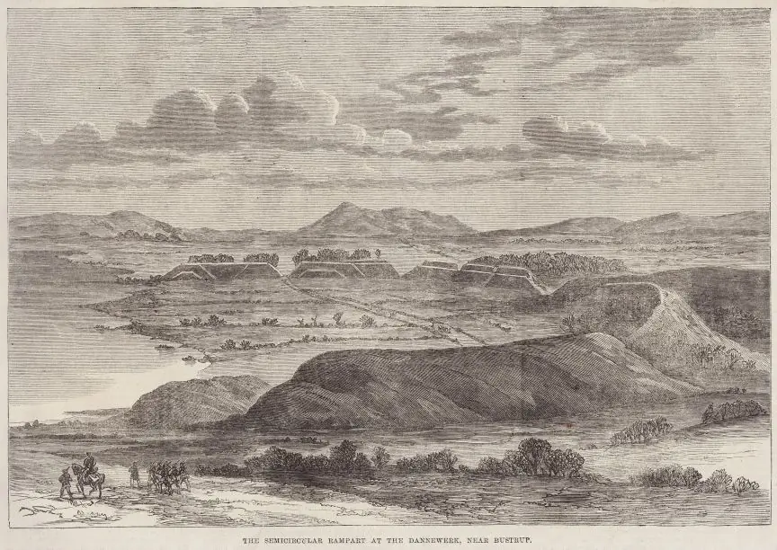

1 - Haithabu - Letztes Update 09.10.2024
08.10.2024 - Die Webseite Haithabu wurde völlig neu gestaltet und inzwischen auch ein 3D Rundgang durchs Museum, die Außenanlagen und das Danewerk eingestellt. Eine Zeitreise ist über diese Webseite möglich. Außerdem gibt es die Webseite "Archäologie-Blog Welterbe Haithabu und Danewerk". Über die Webseite "Viking Walls" kann ein Intro und eine Exploration - virtueller Rundgang - abgerufen werden, die viele Informationen in digitalisierter Form wiedergibt. Man bewegt sich quasi virtuell durch die Landschaft und kann zwischen Nord- und Ostsee einzelne Abschnitte gezielt anklicken und darüber weitere Visualisierungen - z.B. die Palisadenreihe im Hafenbereich usw. - abrufen. Interessante Geschichte! Ferner gibt es die App für Smartphones/Tabletts mit dem Titel "Vergangenheit trifft Gegenwart".
Ein interessanter Bericht zum Ochsenweg findet sich bei Archäologische Nachrichten 2020 digital innerhalb des 26. Bandes der Archäologische Nachrichten aus Schleswig-Holstein 2020, die vom Archäologischen Landesamt Schleswig-Holstein herausgegeben werden.
Haithabu: Welterbe liegt größtenteils noch unter der Erde - 2:48 Minuten - YouTube Video - die Befunde der bislang erfolgten Ausgrabungen digitalisiert
30.06.2018 - Die bedeutenden archäologischen Stätten in Haithabu und Danewerk sind zum Unesco-Weltkulturerbe ernannt worden. Das Welterbekomitee nahm die deutsche Bewerbung am Samstag, 30.06.2018, bei der Sitzung in Bahrain an. Die Stätte sei ein einzigartiges Zeugnis der Wikingerzeit und ihrer kulturellen Traditionen, hieß es zur Begründung. Die darüber neu erstellte Webseite vermittelt alles rund um das Thema.
Dort kann auch die 52-seitige Broschüre zum 5-jährigen abgerufen werden, in der der Weg zum Unesco-Weltkulturerbe aufgezeigt wird. Darin wird auch der Managementplan bis 2030 vorgestellt, Infos zu neuen Beschilderung usw. enthalten.
Haithabu liegt am südlichen Ufer der Schlei, am Haddebyer Noor, gegenüber von Schleswig. Es war in der Wikingerzeit der bedeutendste dänische frühstädtische Seehandelsplatz, der ein Gebiet von ca. 24 ha Fläche umfasste, und zu seiner Blütezeit wohl über 2000 Einwohner besaß. Hier lebten Dänen, Franken, Friesen, Norweger, Sachsen, Schweden und Slawen zeitweilig miteinander und betrieben ihre Geschäfte.
Zum Noor hin war der Ort durch einen Palisadenwall und zum Landesinnern durch einen mächtigen Halbkreiswall geschützt, der bis auf kleine Zerstörungen an den Uferbereichen und beim Nordtor gut erhalten ist und heute noch 6 bis 10 m hoch ist. Er hat drei Öffnungen, eine im Westen, durch die ein Bach eintritt und durch die Stadt fließt, ein Tor nach Norden und eins im Süden. Der Halbkreiswall war mit dem sogenannten Verbindungs- oder Margarethenwall an das System des Danewerks angegliedert.
In den frühen schriftlichen Quellen gab es verschiedene Bezeichnungen für Haithabu - Hedeby, at Haethum, Heithabyr, Hithabu, Sliesthorp, Sliaswich, Schleswic, Schleswig - die aber alle offenbar den gleichen Ort meinen.
Die erste Erwähnung findet sich in den fränkischen Reichsannalen für das Jahr 804, als König Göttrik mit seiner Reiterei und seiner Flotte in Sliesthorp lagerte. Im 8. Jahrhundert lag hier wohl nur eine kleine Siedlung. Diese bot aber durch ihre besonders verkehrsgünstige Lage ideale Voraussetzungen. Die Siedlung nahm stetig an Bedeutung zu, nachdem der dänische König Göttrik im Jahre 808 den slawischen Handelsplatz Reric zerstören ließ und die Kaufleute nach Sliesthorp umsiedelte. Im Jahr 811 beginnt nachweislich eine systematische Bautätigkeit in Haithabu. 849 hat Ansgar, der Apostel des Nordens, mit Genehmigung des dänischen Königs Horich an diesem Ort eine Kirche erbaut. Um 880 herum besucht der Nachfolger Ansgars, Rimbert, die Stadt und berichtet von vielen christlichen Sklaven. Um 1050 nahm der norwegische König Harald Hardrade im Kampf mit dem Dänenkönig Sven Estridsen die Stadt ein und verbrannte sie. Letztmalig wird über den Ort 1066 berichtet, als er von einem westslawischen Heer zerstört und gebrandschatzt wird. Danach war die Ära Haithabus weitgehend beendet und das heutige Schleswig gewann an Bedeutung.
Dass innerhalb des Halbkreiswalles ein großer Handelsplatz gelegen habe, wurde im Jahre 1897 von dem dänischen Forscher Sophus Müller (*24.05.1846 - 23.02.1934, dänischer Prähistoriker)
Bildquelle: Wikipedia - Lizenz: Public Domain
behauptet, der in der sogenannten "Oldenburg" (wie das Areal damals genannt wurde) das Siedlungsgelände der einstmaligen Stadt Hedeby sah. Daraufhin wurden Ausgrabungen veranlasst, die im Jahre 1900 begannen und mit Unterbrechungen bis 1969 fortgeführt wurden. Mit der Bergung eines Wikingerschiffes und den Untersuchungen im Hafen in den Jahren 1979 bis 1980 wurden die Grabungskampagnen vorläufig abgeschlossen. Der Anstiegs des Wasserspiegels der Ostsee im vergangenen Jahrtausend um etwa 1 m sorgte für ungewöhnlich günstige Erhaltungsbedingungen, so dass eine Fülle von Funden zutage kam. Insgesamt wurden allerdings lediglich etwas mehr als 5 % des Siedlungsareals und etwa 1 % des Hafens untersucht.
Einen kleinen Einblick in das Treiben der damaligen Zeit bietet ein Bericht des arabischen Kaufmannes und Diplomaten At-Tartûschi aus Tortosa in Spanien über seinen Besuch in Haithabu/Schleswig im Jahr 965.
Auf dieser Webseite kann man einen , bei dem At-Tartûschi von seiner Reise erzählt.
Luftbild (Siedlungsareal mit Halbkreiswall) Haithabu-Ringwall (nördliches Ende - von außen gesehen) Luftbild (Haithabu mit Verbindungswall) Haithabu (Sicht auf das ehemalige Siedlungsareal) Luftbild (Haithabus Lage am Haddebyer Noor)



Der Halbkreiswall von Haithabu - Holzstich - 1864 - The illustrated London News (Nr. 1242, Sa., 23.01.1864)
Infos zum Wikinger Museum Haithabu
Bilderreihe zum neu gestalteten Wikinger Museum Haithabu (Besuch am 18.08.2013)
Infos zum Projekt Wikinger Häuser Haithabu
Der Haithabu-Ringwall in Bildern
Bilderreihe zur Ausstellung in Hollingstedt, dem Nordseehafen von Haithabu (Besuch am 19.08.2013)
Wikingertage Schleswig
Aufgrund ihrer geschichtlichen Tradition wurden von der Stadt Schleswig am 2. und 3. August 1986 die ersten Wikingertage als Stadtfest ins Leben gerufen. Seitdem fanden zunächst alle zwei Jahre statt und nun sogar jährlich. Sie ziehen immer mehr Besucher, inzwischen mehr als
100. 000, in ihren Bann. An einem Wochenende im August wird dann in einer der ältesten Städte Nordeuropas die faszinierende Welt der Wikinger wieder lebendig. Auf den Königswiesen, direkt an der Schlei, treffen sich "Wikinger" aus mehreren europäischen Nationen, vor allem aus Dänemark, Schweden und England, aber auch aus Polen und Litauen. Länder die einst mit Haithabu in Verbindung standen.
In Schleswig haben sich zwei Gruppen gebildet - "Opinn Skjold" (Wikingerverein seit 1978). Deren Mitglieder tragen originalgetreue Kleider und Ausrüstungsgegenstände und möchten darüber aufklären, dass Wikinger nicht nur wilde Krieger, sondern auch friedliche Siedler, Händler, Bootsbauer, Schmiede, Kunsthandwerker oder Tischler waren. Außerdem noch die Theatergruppe "Midgaard Skalden" (vor 25 Jahren gegründet - Stand 2024), die jährlich ein aufwändiges Schauspiel auf historischem Boden an der Freilichtbühne "An der Hochburg" - wunderschön gelegen zwischen dem Wikingermuseum und dem Wikingerdorf Haithabu an der Westseite des Haddebyer Noores - aufführt.
Bei den Wikingertagen landen auch meist mehrere originalgetreue Wikingerschiffe an den Ufern der Schlei. Auf dem Wikingermarkt werden verschiedene Handwerkskünste vorgeführt, die Erstellung von Werkzeug, Nahrungsmitteln, Handarbeiten usw. vorgeführt, sowie Schwertkämpfe und wikingerzeitliche Kraft- und Geschicklichkeitsspiele abgehalten.
Zu den weiteren Programmpunkten gehört ein Wikinger-Schauspiel, ein Spiel- und Bewegungsprogramm für Groß und Klein, sowie verschiedene Musikdarbietungen. Natürlich gibt es auch ein breitgefächertes Gastronomieangebot.
YouTube Video (2:30 Minuten) von Dirk Andresen - Wikingertage 2024 Highlights - weitere Videos zu diesem Event aus verschiedenen Jahren finden sich über YouTube
Die Wikingertage 2025 finden vom 08.-10.08.25 statt
Impressionen von der Wikingertagen 1996
Impressionen von der Wikingertagen 2002
Das Schauspiel "Gudmunds Tod" - Wikingertage 2002
Impressionen von "Die Rückkehr der Wikinger" 2004